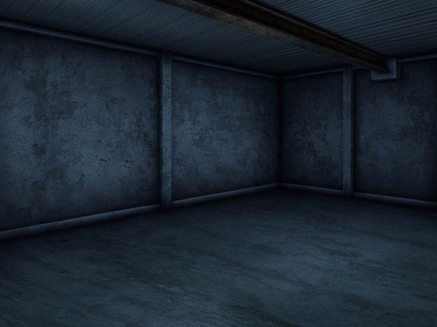

Ao abrir seus olhos lentamente, você acorda em uma cama macia, no canto de uma sala com paredes gélidas de pedra. Apesar da falta de iluminação, você enxerga uma porta de madeira descascada.

Saindo pela porta, você começa a caminhar por um corredor longo. Ao andar até que seus pés doessem, você chega em um jardim, onde pode finalmente descansar.

Ao apoiar sua cabeça no chão, uma escuridão infinita gela seu coração. Seu corpo inteiro cai no chão, enquanto sua vida se perde